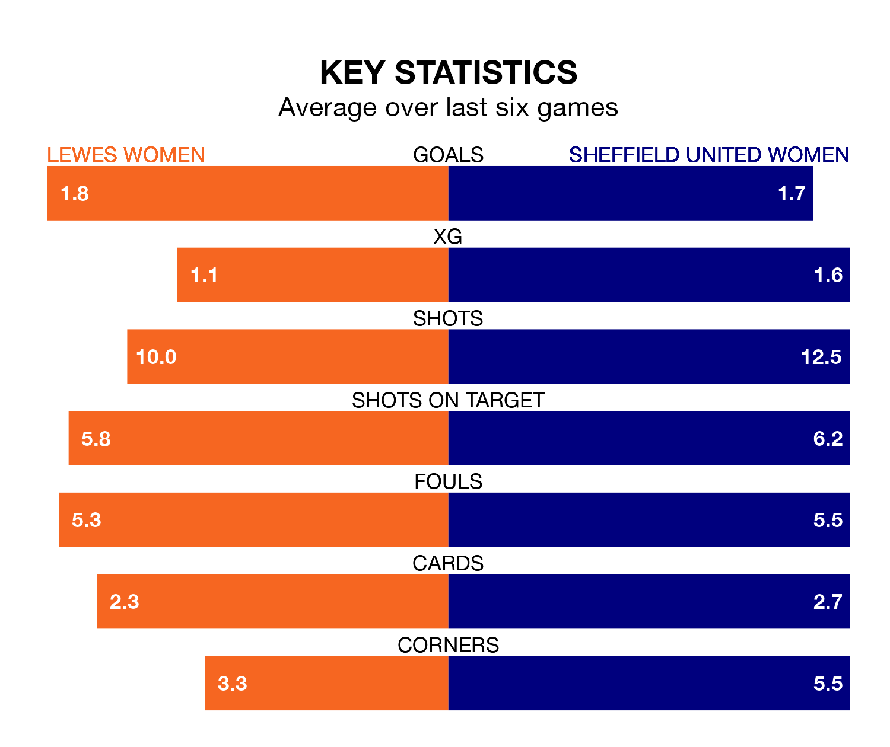

Sheffield United Women travel to Lewes Women on Sunday lunchtime in the FA Women's Championship.
The visitors come into the game on the back of a win in their last match, having beaten Durham Women 5-2 away, with three goals from Isobel Goodwin, one from Jessica Sigsworth and one from Tara Bourne.
Lewes, meanwhile, lost their last match, 4-3 against Sunderland Women, with their goals scored by Amy Goddard, Hollie Olding and Reanna Lauren Blades.
Lewes are bottom of the table after 15 games, of which they have won two and drawn four, earning 10 points.
Sheffield United are four places ahead of the home team in eighth, with five wins and two draws putting them on 17 points.
In Goodwin, the Blades have one of the league's most on-form strikers so far this season. She has notched 10 goals in 13 appearances, to sit second in the scoring charts.
Lewes's top scorers, with three goals each, are Grace Riglar and Olding.
In the last 10 years, Lewes and Sheffield United have played each other on 10 occasions. Lewes won two of them, Sheffield United six, and they drew twice.
On average, Lewes scored 1.1 goals and the Blades 1.8 in those matches.
Their last meeting was on September 17, when Sheffield United won 1-0 at home.
With 14 goals in 15 games so far this season, Lewes are the league's third-lowest scorers with 0.9 goals per game. And they are conceding more than average, letting in 26 goals at a rate of 1.7 per game.
The visitors, meanwhile, are average scorers, with 1.4 goals per game. They have conceded 1.6 goals per game.
The hosts are in disappointing form in the FA Women's Championship, with one win and three draws from their last six games.
With two wins and a draw over that period, Sheffield United's form is slightly better – they have taken seven points from 18, compared to Lewes's six.
Updated: 12:18 (UTC), 19/02/24